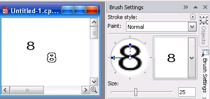
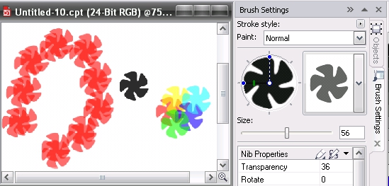

Создание кисти в Photo-Paint
Этот урок предназначен для начинающих пользователей, которые только начали знакомиться с Photo-Paint. Создание собственной кисти мы рассмотрим на двух примерах, в которых рассмотрим варианты создания.
Пример 1 создания кисти из содержимого маски
1. Нажмите Ctrl + N, чтобы создать новый документ.
2. В раскрывающемся списке Size (размер) выберите подходящий размер, например 100х150 мм.
3. Убедитесь, что в качестве фона задан белый цвет (хотя принципиального значения это не имеет). Ничего больше не меняя в окне Create a New Image (Создание изображения), нажмите ОК.
4. Нажмите Т чтобы активировать инструмент Text tool (Текст). По умолчанию будет выбран шрифт Arial 24 pt. Оставьте его без изменения.
5. Щелкните мышью где-нибудь в центре вашего изображения. Появится текстовый курсор. Нажмите клавишу с цифрой 8, чтобы напечатать восьмерку.
6. Выберите мышью на панели Toolbox (Набор инструментов) инструмент Object Pick tool (Выбор объекта) (самый первый на панели Toolbox (Набор инструментов)).
7. Нажмите Ctrl + M, чтобы создать маску или выполните команду Mask > Create > Mask from Object(s) (Маска > Создать > Маска из объектов).
8. Щелкните мышью на пустом месте листа, чтобы снять ограничивающую рамку с текста.
9. Нажмите клавишу Р чтобы выбрать инструмент Paint (Кисть) или щелкните на инструменте мышью.
10. Из меню кнопки Nib Options (Параметры кончика), выберите команду Create from contents of Mask (Создать из содержимого маски).
11. В диалоговом окне Create a Custom Brush (Создание специальной кисти), ничего не меняя щелкните ОК. Хотя если вам покажется предложенный размер 25 пикселей маленьким, можете изменить его в счетчике Nib size (Размер кисти).
Только что созданная вами кисть в виде восьмерки появится в докере Brush Settings (Настройки кисти) (рис. 1). Теперь, чтобы опробовать ее, вам нужно снять выделение с цифры 8. Для этого нажмите Ctrl + R или выполните команду Mask > Remove (Маска > Удалить).

На рисунке показан указатель мыши в форме восьмерки и нарисованная с помощью инструмента Paint (Кисть) фигура в виде той же цифры. Справа вид докера Brush Settings (Настройки кисти) с выбранной только что созданной кистью.
Как видите, ничего сложного в создании собственной кисти нет. Теперь, чтобы удалить эту кисть из списка (если она вам не нужна), в меню кнопки Nib Options (Параметры кончика) выберите команду Delete Current Nib (Удалить текущий кончик).
Пример 2 создания кисти из содержимого маски
Дело в том, что зачастую бывает сложно в Photo-Paint создать фигуру сложной формы. Такую кисть можно создать и другим способом. В этом нам поможет «старший брат» Photo-Paint – Corel Draw. Создайте в Corel Draw какую-нибудь фигуру, залейте ее черным цветом и удалите контур. Затем скопируйте ее в Буфер обмена. Далее выполните следующие шаги:
1. Нажмите Ctrl + N или выполните команду File > New (Файл > Создать), чтобы создать новый документ.
2. Выполните шаги 2 и 3 из предыдущего примера.
3. Вставьте содержимое Буфера обмена любым способом, например, нажав Shift + Insert (мне эта команда привычней).
4. Появится знакомое вам диалоговое окно Resample (Изменить разрешение). Ничего в нем не меняя, нажмите ОК.
Photo-Paint вставит фигуру созданную в Corel Draw, как новый объект.
5. Нажмите Ctrl + M, чтобы создать маску или выполните команду Mask > Create > Mask from Object(s) (Маска > Создать > Маска из объектов).
6. Выберите мышью на панели Toolbox (Набор инструментов) инструмент Object Pick tool (Выбор объекта) (если он у вас в настоящий момент не активен) и щелкнув на пустом месте в окне изображения, снимите ограничивающую рамку с вставленного объекта.
7. Нажмите клавишу Р чтобы выбрать инструмент Paint (Кисть) или щелкните на инструменте мышью.
8. Из меню кнопки Nib Options (Параметры кончика) докера Brush Settings (Настройки кисти), выберите команду Create from contents of Mask (Создать из содержимого маски).
9. В диалоговом окне Create a Custom Brush (Создание специальной кисти), ничего не меняя щелкните ОК. Если хотите, измените размер в счетчике Nib size (Размер кисти).
10. Нажмите Ctrl + R или выполните команду Mask > Remove (Маска > Удалить), чтобы снять выделение с вставленной фигуры.
Созданная кисть появится в списке. На рис. 2 показан пример кисти, созданный из фигуры нарисованной в Corel Draw и фигуры нарисованные с ее использованием.

Как видите, в сочетании с возможностями Corel Draw, в Photo-Paint можно значительно расширить набор имеющихся кистей. Конечно, чтобы нарисовать то, что приведено на рисунке, я настроил и другие параметры кисти (например, Прозрачность).